Akiota, Hiroshima: things to do, food and stays
Akiota · Hiroshima
Akiota
Highlighted on the Hiroshima map.

Stay
三段峡温泉 川本旅館
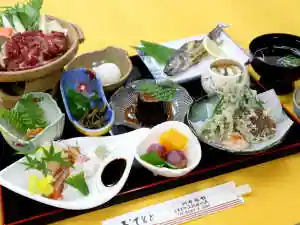
Sandankyo Onsen Kawamoto Ryokan
Ryokan inn at Sandankyo Onsen in Shibaki, Akiota.
グリーンスパつつが
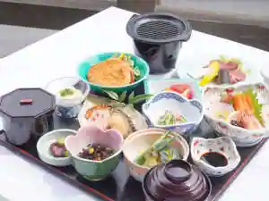
Gurinsupa Tsutsuga
Inn at Wonozomeru Onsen in Nakatsutsuga, Akiota.
二代目田舎AWAY
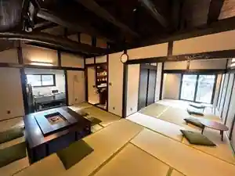
Nidaime Inaka AWAY
Inn in Uedono, Akiota with an irori hearth dining room and a renovated traditional house.
グローバルリゾートいこいの村ひろしま
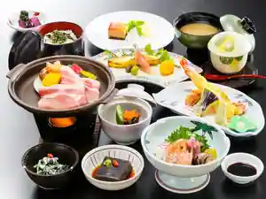
Gurobaru Resort Ikoino Mura Hiroshima
Dining
おふくろ弁当 もみじコロッケ店

Ofukuro Bento Momiji Korokke
鯛焼屋 よしお
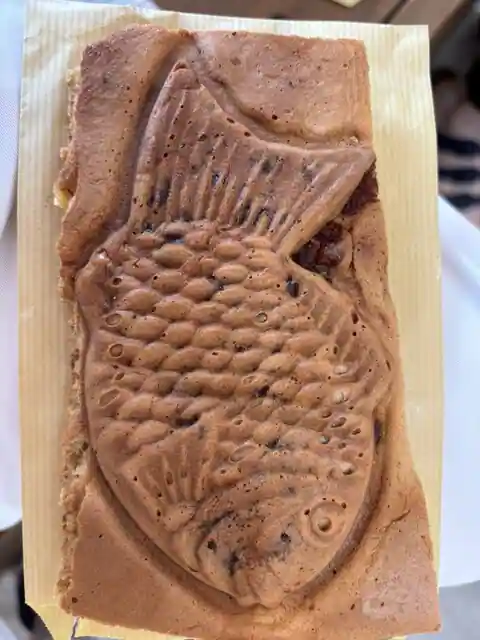
Taiyaki Ya Yoshio
渓流茶園
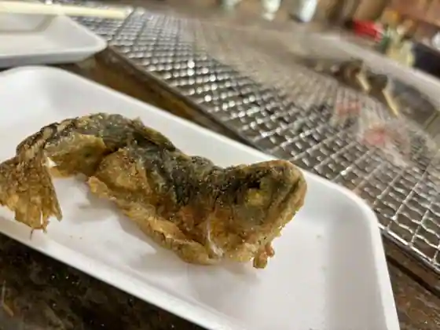
Keiryu Chaen
和風レストラン 来夢
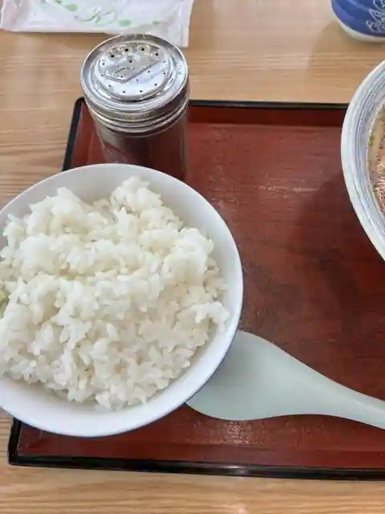
Wafu Restaurant Raimu
やぶ月
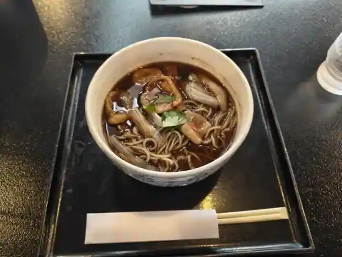
Yabu Gatsu
山が笑うオソラ食堂
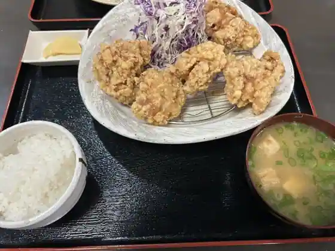
Yama Ga Warau Osora Shokudo
来夢とごうち 売店
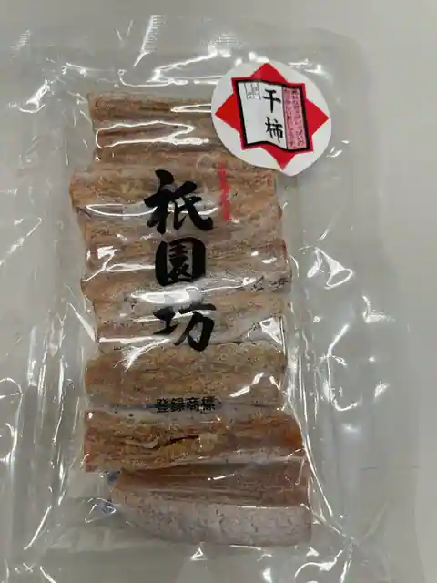
Raimu Togochi Bai
きっちんたまがわ 温井店
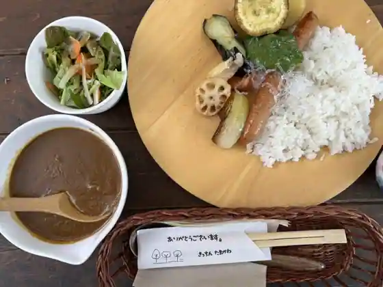
Kitchintamagawa Nukui
高丸商店 戸河内インター店
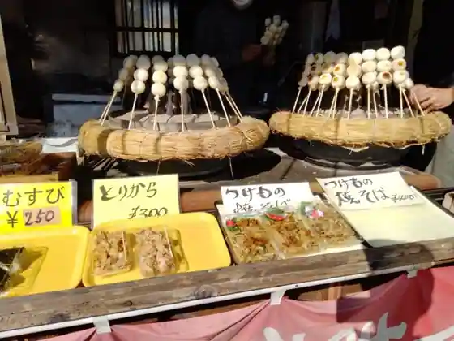
Takamaru Sho Togochi Inta
棚田カフェ イニ ミニ マニモ
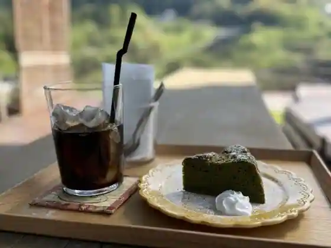
Tanada Cafe Ini Mini Manimo
松蕎庵
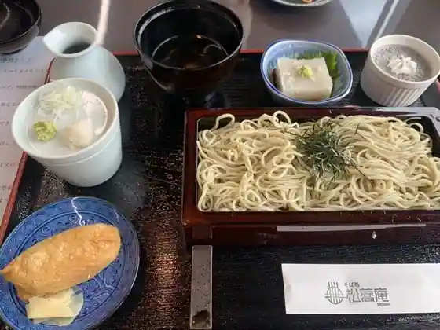
Matsu Kyo Iori
ヨコタ製菓
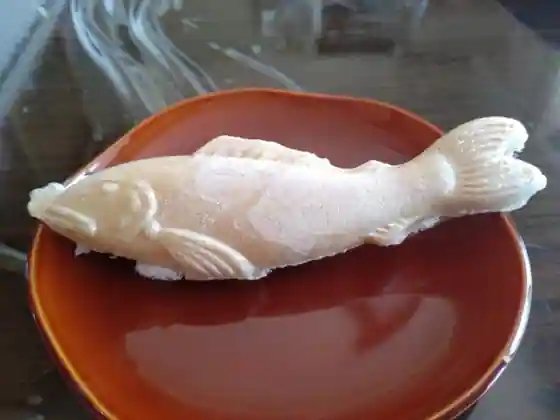
Yokota Seika
清流の里 気紛れ庵
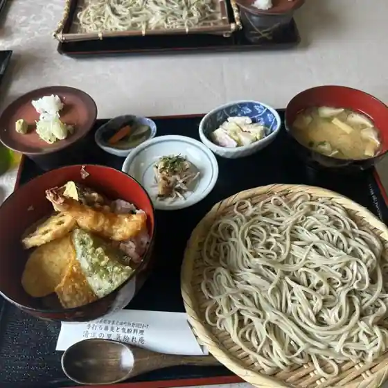
Seiryu No Sato Kimagure Iori
味彩紀行 とごうちインター店
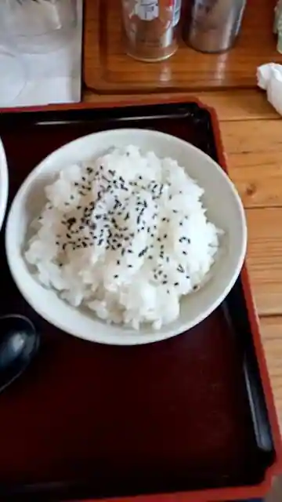
Aji Sai Kiko Togochi Inta
黒淵荘
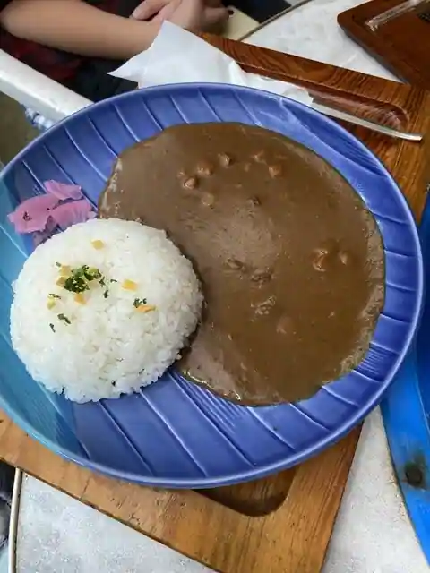
Kuro Fuchi So
高丸商店 三段峡本店
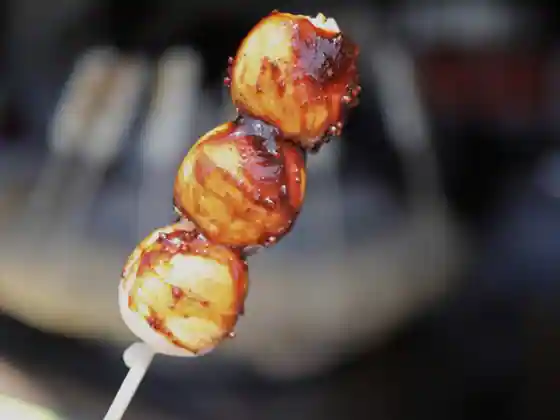
Takamaru Sho Sandankyo Hon
温井スプリングス
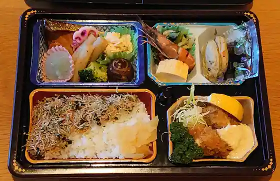
Nukui Supuringusu
いこいの村ひろしま
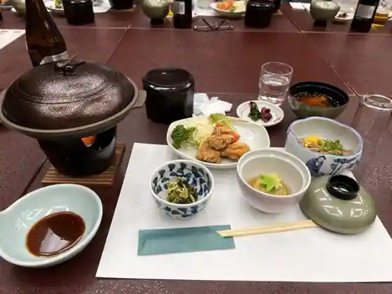
Ikoino Mura Hiroshima
川本旅館
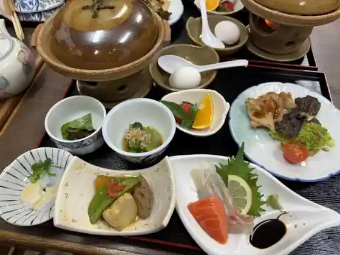
Kawamoto Ryokan
ノース
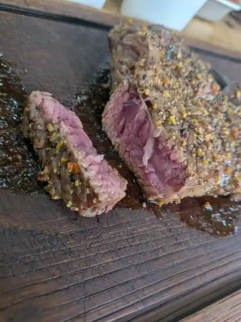
Nosu
恐羅漢バーガー
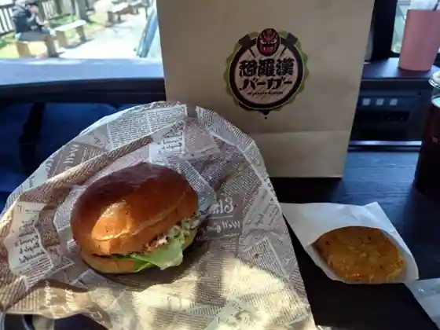
Osorakan Burger
御食事処 三段峡 川流
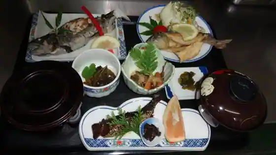
Mike Koto Tokoro Sandankyo Senryu
太田川 かき丸屋
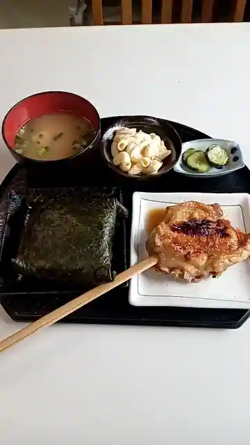
Otagawa Kaki Maruya
まるしょう
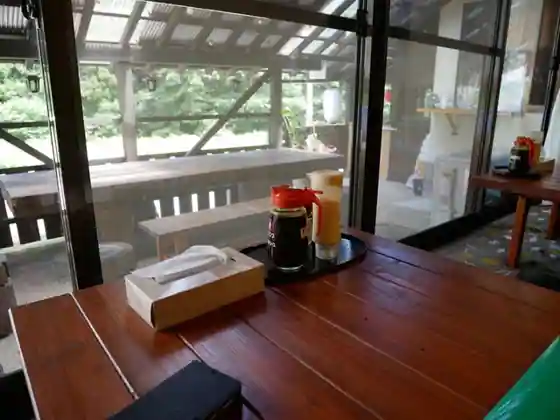
Marusho
Sights
Sandankyo

Nukui Dam

Jinnyu Yama

Ini no Tanada
Osorakan Yama